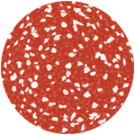

Salami is a 1U Dell server donated by Andrew Godwin in 2007.
It is currently powered off in a rack in Worcester College in Oxford, and it was our main user machine for current students. It's also done duty as www.ox.compsoc.net and ran the now-defunct Planet CompSoc.
Salami's original hardware was donated to CompSoc by the Department of Astrophysics in Hilary 2005. It's a dual 1 GHz PIII with 1GB of RAM and 2x18GB SCA disks. It was originally a cluster node as part of the 64-node Linux beowulf cluster 'glamdring' used for Theoretical Astrophysics simulations.